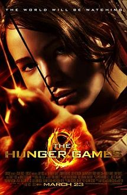
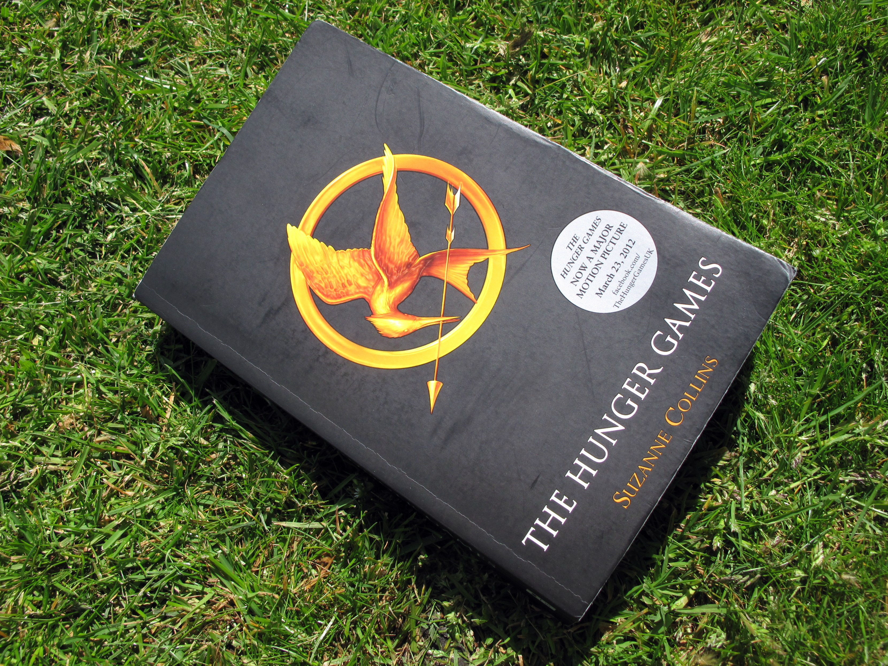
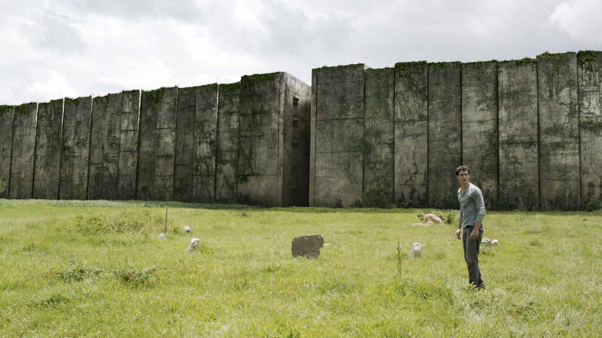
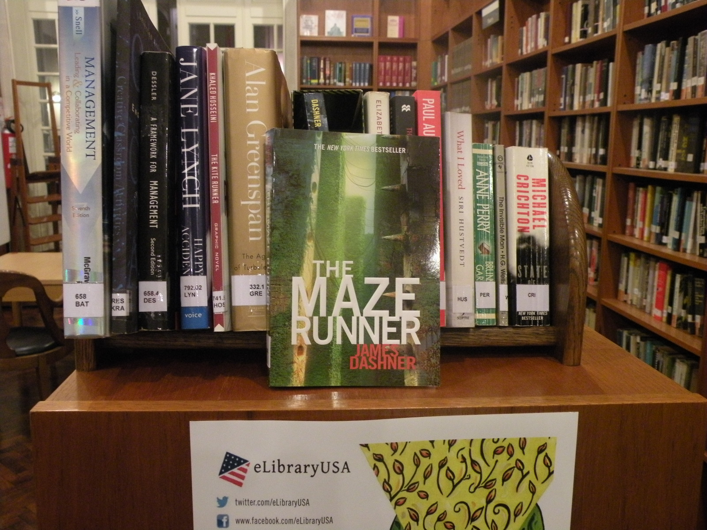

By: Nicola Yoon


By: Suzanne Collins
By: James Dashner
| Title | Movie | Book | Comparison |
|---|---|---|---|
| Everything, Everything By: Nicola Yoon |
|
|
The book kept most of the same plot, but made a lot of unecessary changes and left things out. You would only notice if you had read the book, but it would have been much better if it had incorporated these small details into the movie. The movie was good, but the book was better. |
| The Hunger Games By: Suzanne Collins |
 |  | The Hunger Games is one of my all time favorite books, and I thought the movie would destroy it. Surprisingly, they did a great job following almost everything that happened in the books. Other than some small details that only I (and maybe 2 other people) would notice, the movies were up to my extremely high standards. |
| The Maze Runner By: James Dashner |
 |  | This movie does not make sense at all. The sequels were even worse, and had almost nothing to do with the books. It was basically a new story with the same character names. If you loved the Maze Runner Series as much as I did, skip the movie. |